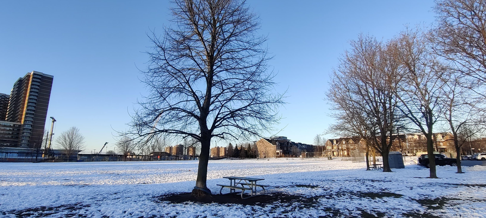

Surviving Canadian Winters.
When I arrived in Canada at the end of 2023, it was my first encounter with a true Canadian winter. The cold was unlike anything I had ever experienced, and I found myself completely overwhelmed. Yet, to my surprise, longtime residents assured me that this was the mildest winter in over 50 years. I remember thinking, If this is mild, what does a real Canadian winter look like? I didn’t have to wonder for long. In early January 2025, I got my answer when the temperature plunged to a bone-chilling -25°C. It was brutal, to say the least. The snow piled up to my knees, turning the streets into an endless white abyss. Schools shut down, offices closed, and even the usually resilient public transit ground to a halt. The entire city stood still, helpless against nature’s fury. For the first time, I truly understood what winter in Canada meant.
Slowly, I got used to the winter. I won’t lie and say I enjoy it, but I’ve learned to live with it. An old man on the bus once told me, “It’s never too cold—you’re just not dressed properly.” So, I made sure I was. A thick winter jacket, snow boots, gloves, a cap, thermals—layers upon layers to shield myself from the biting cold. There’s a famous scene in the Oscar-winning movie "Parasite" where a wealthy woman, sitting comfortably in the backseat of a car, gazes out at the city after a heavy rainfall and remarks how beautiful it looks. Meanwhile, her driver, staring at her through the rearview mirror, thinks of his own home—completely flooded, destroyed by the same rain she finds so picturesque. I often think about that scene in the context of Canadian winters. For those with warm houses and personal vehicles, winter is just an aesthetic—glistening snow, holiday lights, and cozy evenings by the fireplace. But for those who work outdoors or rely on public transit, winter is a different beast altogether. Standing at a bus stop in -15°C, hands numb, face half-frozen, stomach empty since morning, waiting 20 minutes for a delayed bus that may never come—it’s a test of endurance. When the bus finally arrives, it’s packed beyond capacity, filled with exhausted commuters and homeless people seeking shelter from the unforgiving cold. Many are agitated, some are violent. The subway isn’t any better—cramped, overheated yet freezing, a chaotic refuge from the streets. People with their own cars rarely experience the worst of winter. They go from their heated homes to their heated vehicles to their destinations, spending only moments in the cold. But for the rest of us, winter is inescapable. The sun is a rare sight. When I wake up for class, it hasn’t risen yet. By the time I return home, it’s already dark. The trees stand lifeless, stripped of their leaves, looking like they’ve long been dead. After a long, exhausting Monday, I pass by a park and see children playing in the snow. Their laughter rings through the air as they chase each other, throwing snowballs, their faces flushed with joy. I watch them for a moment and force a sad smile. I wish I could be that happy, that carefree. But that time has passed.

If life has taught me anything, it is that nothing lasts forever. No matter how endless and unforgiving the night may seem, the sun always rises. Winter in Canada felt eternal at times—dark, cold, and unrelenting. The days blurred into long stretches of grey, the air sharp against my skin, the streets lifeless under heavy snow. But even in the depths of winter, change was quietly at work. Slowly, subtly, the ice began to melt. By April, winter loosens its grip. The heavy coats and somber faces give way to bright colors and lighter steps. Flowers bloom, trees reclaim their green, and the city, once frozen and still, bursts into life again. The sun lingers in the sky, warming the streets, inviting people to parks and patios. You find yourself on the beach, laughing with friends, the cold months now just a distant memory. Life feels good again. And that’s the lesson winter teaches: No matter how harsh, it always ends. If you’re going through the winter of your life—an unbearable season of loneliness, hardship, or sorrow—remember that spring is already on its way. Change is constant. The darkness won’t last forever. One day, when you least expect it, warmth will return, the colors will come back, and you’ll find yourself smiling in the sun once more.
I'd love to hear your thoughts about this article and other ones in the blog.